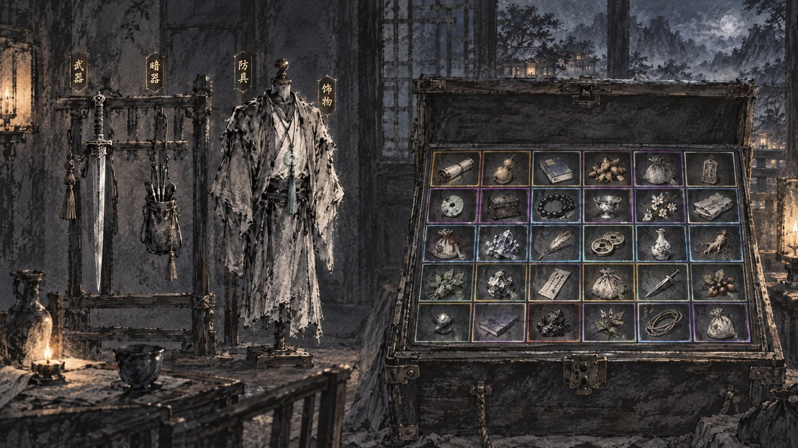
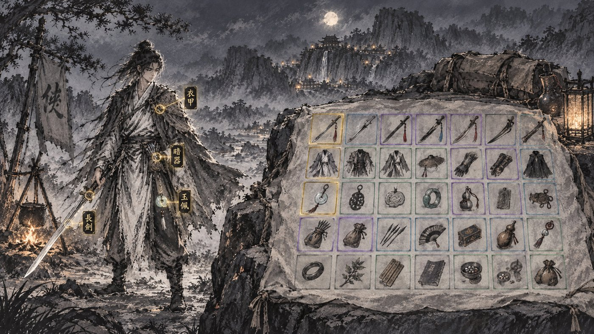
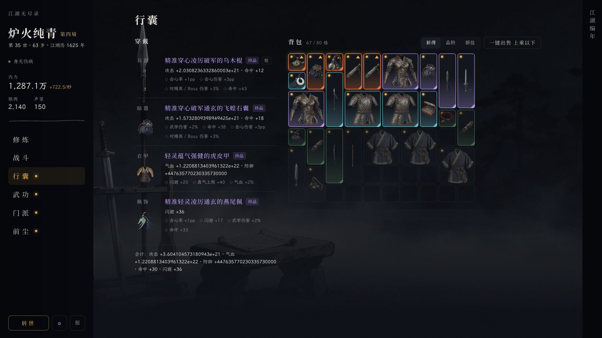
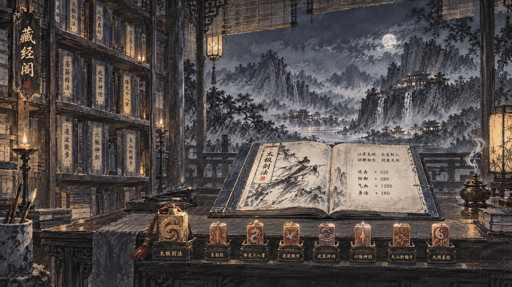
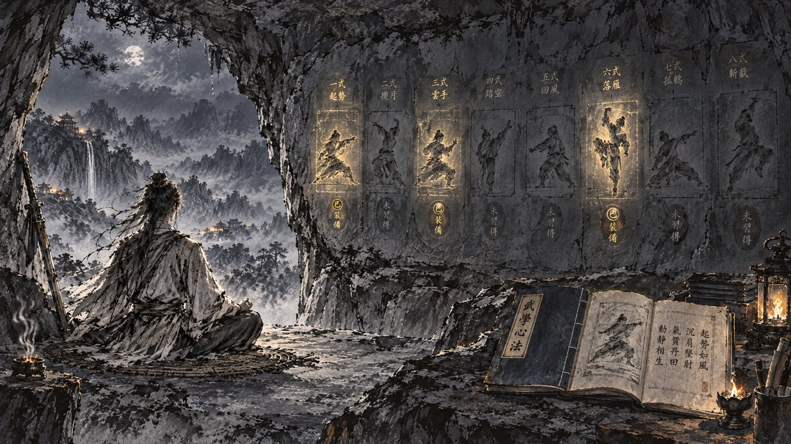
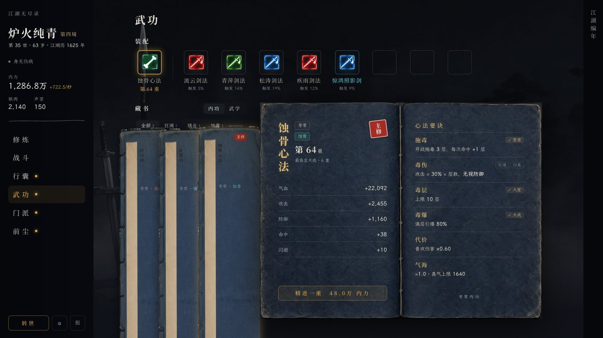

行囊 · 武功 · 方向挑选
行囊

乙 · 客栈箱笼（推荐）左边兵器架挂兵器与暗器、衣架穿衣甲与佩饰，即四个穿戴位；右边一口打开的箱笼，格子里放背包物件，格边颜色即品阶。
架子与衣架是空的，穿上什么就把那件的图挂上去，换棍换枪都对得上。

甲 · 夜宿路边人物立在营火旁，四件穿戴长在身上，金圈标出部位；右边包袱摊在石上，物件摆成格。
最像修炼页。但人手里画死了一把剑，换成棍、枪、暗器时身上对不上，只能让人空手、穿戴靠金圈旁的小图。

现状穿戴是四行长名字加词条小字；背包格四色描边混排；底图与内容无关。
武功

甲 · 藏经阁（推荐）左边书架即藏书，书脊竖写书名；书案上摊开的书即现在的磁青书页；案前一排石印即装配位，主修内功一枚大印、武学一排小印。
和现在的三块（装配 · 藏书 · 书页）一一对上，只是从网页摆放换成一间屋子。

乙 · 崖洞石壁石壁上刻着一排招式图，已装的发金、未得的暗；人在洞口打坐，书摊在石上。
画面最好看，但石壁只放得下一门武学的几式，藏书几十本没处放，得另做翻页。

现状装配栏是高饱和发光方块；藏书书架拉伸变形、超出屏幕；页头在画外留黑边。磁青书页保留。